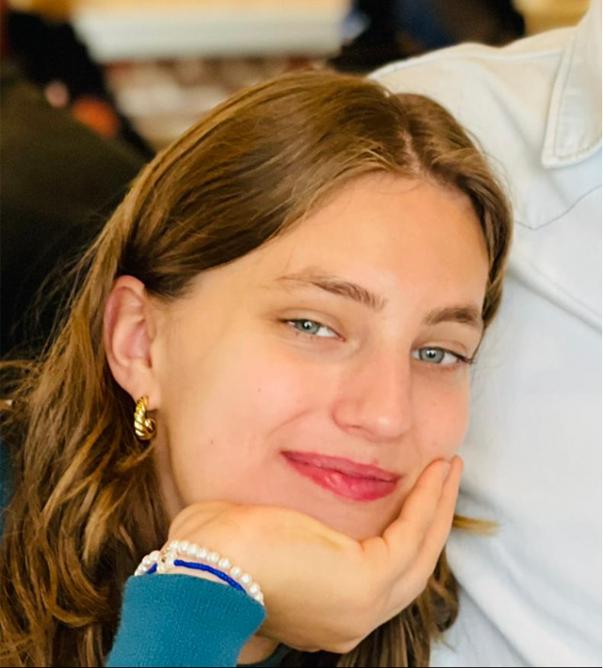

Drawing
I have been drawing since i was a little kid. I attended art school for 4 years, and realised I didn't want to pursue a career in this field but rather keep it as a hobby.
Reading
I have been reading since I was a little kid. I like all genres, and it's a nice break from the world.
Running
I started running at the first lockdown and just never stopped. I feel that the excercise clears my head and makes me feel better mentally and physsicaly.
Music
Everyone likes music and I am no exception. I like all kinds of genres but listen to hip-hop and rap most often. I also really enjoy classical music and lofi, especially for studying.

Gaming
I occasionally enjoy playing games. I play on the nintendo switch, playstation 4, and sometimes on my laptop. My all time favorite games are read dead redemption 2, breath of the wild and Minecraft.
Films & Series
Again, I think everyone enjoys watching films or series. Some of my favorites are: Spiderman Into the Verse, Game of Thrones, One Punch Man and Brooklyn 99.